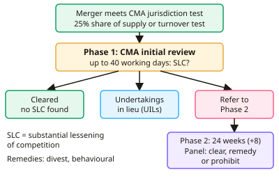

A-level Economics Year 13 · Topic 10
Competition policy, regulation and ownership
This topic looks at how governments promote competition and control powerful firms.
We will cover competition policy and the CMA, regulation of natural monopolies, and privatisation and nationalisation.
Then we look at deregulation and contestability, and the risks of government failure in markets.
- 5 subtopics
- 230 questions
- Free: 10.1 notes and 10 questions
In this topic
- 10.1Competition policy: the CMA, merger control, cartels and abuse of dominant positionFree below · 34 questions
- 10.2Regulation of natural monopolies and privatised industries: price caps (RPI-X/CPI-X), rate of return and quality standardsOpen in Full Marks · 75 questions
- 10.3Privatisation and nationalisation: arguments for and againstOpen in Full Marks · 25 questions
- 10.4Deregulation, liberalisation and promoting competition and contestabilityOpen in Full Marks · 23 questions
- 10.5Government failure in markets: regulatory capture, information gaps and unintended consequencesOpen in Full Marks · 73 questions
10.1 · Free notes
Competition policy: the CMA, merger control, cartels and abuse of dominant position

Key points
- Competition policy aims to promote competition, improve allocative and productive efficiency and protect consumers from abuse of market power. In the UK it is enforced mainly by the Competition and Markets Authority (CMA), created in April 2014 from the Office of Fair Trading and the Competition Commission.
- The legal framework is the Competition Act 1998 and the Enterprise Act 2002. Chapter I of the 1998 Act bans anti-competitive agreements. Chapter II bans abuse of a dominant position. The 2002 Act covers merger control, market investigations and the criminal cartel offence. Since Brexit the CMA, not the European Commission, handles UK cases.
- A cartel is a collusive agreement between rivals to fix prices, limit output, share markets or rig bids. It acts like a joint monopoly: price rises, output falls and there is deadweight loss. Cartels are unstable because each member has an incentive to cheat (prisoners' dilemma), but they are hard to detect and more likely with few firms and high barriers to entry.
- Penalties for cartels and other breaches include fines of up to 10% of worldwide turnover, director disqualification (up to 15 years) and a criminal cartel offence carrying up to 5 years' imprisonment. A leniency programme offers immunity or a reduced fine to the first member to report the cartel, and informants can be rewarded.
- Abuse of a dominant position: dominance (roughly a market share above about 40%) is not illegal, but abuse is. Examples are predatory pricing (selling below average variable cost to drive out rivals), price discrimination, exclusive dealing, tying and bundling, refusal to supply and excessive pricing.
- Merger control deals with horizontal (same stage, same industry), vertical (supplier or customer) and conglomerate (unrelated) mergers. The CMA can review a merger if the combined firm has a 25% share of supply (with an increase), or if the target's UK turnover passes a threshold. It then asks whether the merger causes a substantial lessening of competition (SLC).
- The UK merger process has two stages. Phase 1 lasts 40 working days and ends in clearance, undertakings in lieu (UILs), or a reference to Phase 2. Phase 2 is an in-depth inquiry by an independent panel lasting 24 weeks (extendable by 8). Remedies are prohibition, divestiture (structural) or behavioural remedies (for example price or access commitments).
- Other tools: market investigations into whole markets, and concurrent powers held by sector regulators (Ofcom, Ofgem, Ofwat, ORR, FCA). The Digital Markets, Competition and Consumers Act 2024 lets the CMA designate firms with strategic market status and impose conduct requirements.
- Evaluating mergers: benefits include economies of scale, dynamic efficiency (R&D funded by profit), rescue of failing firms and international competitiveness. Costs include higher prices, less choice and X-inefficiency. If barriers to entry are low the market is contestable, so the threat of entry limits market power and weakens the case for intervention.
- Evaluating competition policy: information asymmetry, slow and costly cases, difficulty defining the relevant market, uncertain deterrence, and fines that may be passed on to consumers. There is also tension between competition and the government's growth and investment objectives (for example the 2025 strategic steer to the CMA). Policy usually works best alongside sector regulation.
In more detail
- Worked maximum fine: a firm with worldwide turnover of £2bn could be fined up to 10%, or £200m, for a serious breach of competition law.
- Blocked merger: in 2019 the CMA blocked the Sainsbury's–Asda merger, finding it would raise prices and reduce choice for shoppers.
- Merger remedies: the CMA approved Microsoft's purchase of Activision Blizzard in 2023 only after the cloud gaming rights were sold to Ubisoft.
- Digital markets regime: since 2025 the CMA can give tech giants 'strategic market status', as it did for Google in search, and set rules on how they behave.
Practice
Competition policy: the CMA, merger control, cartels and abuse of dominant position: 10 questions
Pick an answer to check it, or open the answer for the explanation.
1. Which body was created in April 2014 by merging the Office of Fair Trading and the Competition Commission?
- Financial Conduct Authority
- Ofcom
- Competition and Markets Authority
- Competition Appeal Tribunal
Show answer
C: Competition and Markets Authority. The CMA replaced the OFT and the Competition Commission in April 2014 and is the UK's main competition authority. The Competition Appeal Tribunal only hears appeals.
2. Which prohibition is contained in Chapter II of the Competition Act 1998?
- Abuse of a dominant position
- Price fixing between rivals
- Mergers above 25% share of supply
- Selling below cost by any firm
Show answer
A: Abuse of a dominant position. Chapter II bans abuse of a dominant position. Chapter I bans anti-competitive agreements such as price fixing, and mergers fall under the Enterprise Act 2002.
3. Three rival bus operators secretly agree to charge identical fares in a city. Under UK law this is mainly:
- A merger breaching the SLC test
- Legal price leadership
- An abuse of dominant position
- A cartel breaching Chapter I
Show answer
D: A cartel breaching Chapter I. Secret agreements between rivals to fix prices are cartels, prohibited by Chapter I of the Competition Act 1998. Abuse of dominance concerns the conduct of a single dominant firm.
4. The CMA can fine a firm found to have breached the Competition Act 1998 up to what proportion of its worldwide turnover?
- 25%
- 10%
- 5%
- 1%
Show answer
B: 10%. The maximum penalty under the Competition Act 1998 is 10% of worldwide turnover of the undertaking.
5. A dominant supermarket sells milk below average variable cost to force a local rival out, then raises the price. This is best described as:
- Price leadership
- Predatory pricing
- Vertical integration
- Cost-plus pricing
Show answer
B: Predatory pricing. Pricing below AVC to eliminate a rival and then raising prices is predatory pricing, a classic abuse of a dominant position.
6. The main test the CMA applies when assessing a merger is whether it will cause:
- High turnover in the target firm
- A substantial lessening of competition
- A fall in the firms' combined profits
- Job losses in either firm
Show answer
B: A substantial lessening of competition. UK merger control asks whether the merger creates a substantial lessening of competition (SLC) in a market. Profits and job losses are not the test.
7. Firm A has an 18% share of UK supply and firm B 9%. They plan to merge. Under the 25% share of supply test, what is the position?
- Combined share 27%: CMA can review it
- Combined share 18%: below threshold
- Combined share 27%: automatically blocked
- Combined share 9%: no review possible
Show answer
A: Combined share 27%: CMA can review it. 18% + 9% = 27%, which is above 25%, so the CMA has jurisdiction to review. Review does not mean automatic prohibition; the SLC test decides.
8. A car manufacturer buys its main tyre supplier. This is an example of a:
- Vertical merger
- Cartel agreement
- Horizontal merger
- Conglomerate merger
Show answer
A: Vertical merger. The firms are at different stages of the same supply chain, so this is a vertical merger. Horizontal mergers join direct rivals.
9. Under the CMA leniency policy, the first cartel member to report the cartel and cooperate may receive:
- A larger fine for confessing
- No change in penalty
- Automatic approval of its mergers
- Immunity or a reduced fine
Show answer
D: Immunity or a reduced fine. Leniency rewards the first firm to come forward with immunity or a reduced fine. This destabilises cartels by increasing the incentive to defect.
10. Why might the CMA clear a merger that raises the combined firm's market share?
- Mergers cannot raise prices
- Competition policy covers cartels only
- Entry barriers are low, so the market stays contestable
- Larger firms always cut prices
Show answer
C: Entry barriers are low, so the market stays contestable. If barriers to entry are low, the threat of new entrants limits market power, so there may be no substantial lessening of competition. Efficiency gains can also matter.
Keep going in Full Marks
Full Marks has 34 questions on Competition policy: the CMA, merger control, cartels and abuse of dominant position (24 more than here), set out in practice levels. You also get notes and 3D models for all 5 subtopics of Competition policy, regulation and ownership, plus games, timed exams and past papers.